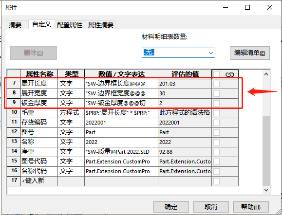
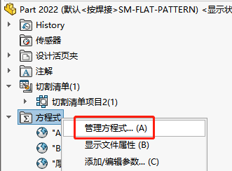
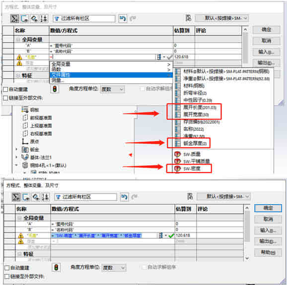
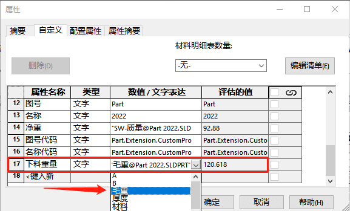

SOLIDWORKS-方程式和属性
看过《SOLIDWORKS-模板-属性》文章的同学，应该有见过：在属性页内添加方程式结果的属性。
那这个有啥用呢？这里列举一项由方程式计算钣金下料”毛重”的方程式计算。
0、前期准备、你需要一份带有长宽高数值属性的钣金零件，其属性页如下：提前在属性页做好钣金展开的”边界框长度”和”边界框宽度”属性。方法可以参考钣金属性教程。
1、右键【方程式-管理方程式】既然方程式的编辑窗口。
2、在方程式界面添加变量：毛重= "SW-密度" * "展开长度" * "展开宽度" * "钣金厚度"
3、完成后，我们可以将方程式写回属性页。（注意：属性这里的变量和方程式的变量不能同名，所以此处的属性名设为”下料重量”）
补充：
新功能：2021更新了直接在属性中选择“方程式”类型的属性，这里就就可以绕过方程式直接在属性页填写。
不过截至2023属性API貌似不支持批量填入“方程式”的类型。这也导致批量添加的是文本数据不能进行计算。